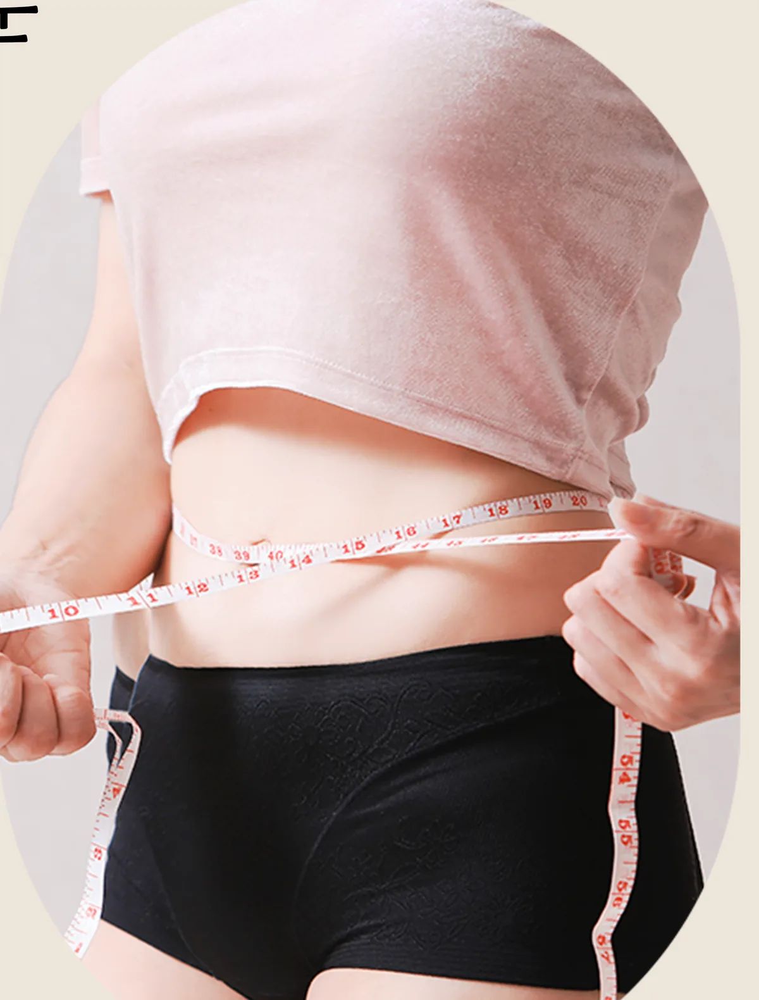

Featured
연결한의원의 주요 진료를 확인해 보세요
-
 연결한의원 청주오창
반응을 확인하고 다시 보정합니다
연결한의원 청주오창
반응을 확인하고 다시 보정합니다
같은 병명에도 치료가 달라야 하는 이유
증상 단계와 회복력, 치료 후 반응까지 확인하는 연결한의원의 진료 원칙을 소개합니다.
연결한의원 진료철학 자세히 보기 → -
 연결한의원 청주오창
실비·건강보험 적용 추나요법
연결한의원 청주오창
실비·건강보험 적용 추나요법
목·허리 통증, 원인부터 정확히 구분합니다
촉진과 필요 시 영상자료로 불균형 지점을 확인한 뒤 개인 상태에 맞는 강도로 추나 치료를 진행합니다.
추나·통증치료 자세히 보기 → -
 연결한의원 청주오창
동의보감 제조법을 준수한 수제 공진단
연결한의원 청주오창
동의보감 제조법을 준수한 수제 공진단
쉽게 지치고 회복이 더딜 때 살펴야 할 것
원장 상담 후 체질과 현재 상태에 맞춰 조제하는 녹용 분골 2배 공진단입니다.
녹용 2배 공진단 자세히 보기 → -

연결한의원 청주오창 식욕 조절을 돕는 연결 감비환반복되는 식욕과 체중 정체에는 이유가 있습니다
현재 체중뿐 아니라 식사, 수면, 활동량과 과거 약물 반응을 확인하는 한방 다이어트 진료입니다.
한방 다이어트 자세히 보기 → -
 연결한의원 청주오창
자동차보험 본인부담금 없이 진료
연결한의원 청주오창
자동차보험 본인부담금 없이 진료
사고 직후 안 아파도 후유증이 걱정되신다면
보험 접수 확인부터 통합 진단, 침·약침·뜸·한약·추나까지 사고 후유증을 체계적으로 관리합니다.
교통사고 후유증 자세히 보기 → -
 연결한의원 청주오창
아이의 성장 시기를 놓치지 않도록
연결한의원 청주오창
아이의 성장 시기를 놓치지 않도록
또래보다 더디거나 잔병치레가 잦은 아이라면
성장·식욕·수면·비염 등 아이의 생활 패턴을 살펴 녹용 분골을 더한 성장보약으로 관리합니다.
성장보약 · 소아 자세히 보기 → -
 연결한의원 청주오창
질병을 넘어 사람을 중심에 두는 진료
연결한의원 청주오창
질병을 넘어 사람을 중심에 두는 진료
증상을 억누르기보다 몸의 균형을 회복합니다
비염·두통·어지럼·소화장애·갱년기 증후군을 체질 맞춤 한약으로 살피는 체질개선 클리닉입니다.
체질개선 클리닉 자세히 보기 → -
 연결한의원 청주오창
산모의 회복 단계에 맞춘 처방
연결한의원 청주오창
산모의 회복 단계에 맞춘 처방
출산 후 몸조리, 시기에 맞춰 다르게 처방합니다
산후풍·부종·관절통·수유 상태를 확인해 어혈 제거와 기혈 보강 단계로 나눠 관리하는 산후보약입니다.
산후보약 자세히 보기 → -
 연결한의원 청주오창
편하게 치료받는 프라이빗 1인 치료실
연결한의원 청주오창
편하게 치료받는 프라이빗 1인 치료실
모든 치료실이 1인실, 프라이빗한 공간
침·약침·추나·상담이 이루어지는 모든 치료실을 1인실로 운영해 다른 환자와 마주치지 않고 편하게 치료받을 수 있습니다.
원내 안내 자세히 보기 → -
 연결한의원 청주오창
치료 전후 몸을 이완하는 공간
연결한의원 청주오창
치료 전후 몸을 이완하는 공간
수치료기 라운지에서 치료 전후 긴장을 풉니다
온열 수치료 베드가 준비된 라운지에서 근육의 긴장을 풀고 치료 효과를 높입니다.
원내 안내 자세히 보기 →
연결한의원 청주오창은 오창읍·오창과학산업단지 생활권은 물론 청주 시내와 오송·증평·진천에서도 찾아주시는 한의원입니다. 증상 단계와 체질에 맞춰 추나·약침·한약 치료를 진행하며, 365일 평일 야간까지 진료합니다.
Treatment record
누적 치료 기록으로 보는 연결한의원의 진료 경험
2026.09.18 기준 누적 치료 기록
Clinic at a glance
필요한 때 찾아올 수 있는 연결한의원 청주오창
진료시간: 평일 09:30–20:00 (점심 13:00–14:00) · 토·일·공휴일 09:30–15:00 · 원장별 진료 요일은 원장 소개에서 확인하세요

About
연결한의원 청주오창
충북 청주시 청원구 오창읍 2산단로 132, 301·302호 (3층)
부영6단지 정문 건너편 · 부민빌딩 3층
- 평일 (월~금)09:30 – 20:00점심시간 13:00 – 14:00
- 토·일·공휴일09:30 – 15:00점심시간 없이 진료
- 대표전화043-715-3688
Why Yeongyeol
연결한의원을 비교할 실제 이유
원장들이 매일 직접 침·한약·추나를 받아보며 다듬는 치료 감각
연결한의원 원장들은 실제로 서로에게 침을 맞고 한약을 복용하며 추나 치료를 받아봅니다. 환자가 치료 뒤 느끼는 감각을 직접 확인하려는 목적으로, 같은 부위라도 자극 위치가 조금만 달라져도 반응이 달라진다는 것을 스스로 겪으며 보조수 강도와 깊이를 세밀하게 조절하는 방법을 연구합니다.
모든 치료실이 1인실, 프라이빗한 공간
연결한의원 청주오창은 침·약침·추나·상담이 이루어지는 모든 치료실을 1인실로 운영합니다. 다른 환자와 마주치지 않는 프라이빗한 공간에서 증상과 치료 중 반응을 신경 쓰지 않고 편하게 확인받을 수 있습니다.
오창 허리 한의원: 통증 부위보다 신경 증상을 먼저 구분
허리만 아픈지 엉덩이·다리까지 이어지는지, 근력·감각·보행 변화가 있는지를 먼저 확인합니다. 기존 MRI·엑스레이가 있으면 증상과 맞춰 보고, 영상검사나 다른 진료가 우선인 경우 이를 안내합니다.
365일, 평일 야간까지 — 필요한 때 올 수 있는 한의원
평일은 저녁 8시까지, 토·일·공휴일도 오후 3시까지 진료합니다. 퇴근 후나 주말에도 치료를 이어갈 수 있도록 세 원장이 요일별로 협진하며, 3인 진료로 대기 시간을 줄입니다.
Clinic
편안하게 진료받는 원내 공간


Column
최신 건강정보 칼럼
오창 산단 사무직의 뒷목 통증, 거북목이 두통으로 이어지는 이유
하루 8시간 이상 모니터를 보는 사무직은 고개가 앞으로 나온 자세가 굳어지기 쉽습니다. 뒷목 근육의 긴장이 두통으로 이어지는 과정과 진료실에서 확인하는 기준을 정리했습니다.
2026-09-15 · 체질·보약공진단은 언제 먹어야 할까요? 수험생·직장인·어르신의 복용 시기
공진단은 ‘좋은 약’이지만 누구에게나 같은 시기에 같은 방법으로 맞는 것은 아닙니다. 대상별로 복용을 고려할 시점과 진료실에서 확인하는 것을 정리했습니다.
2026-09-10 · 소아·성장아이 키 성장, 수면과 식욕부터 확인해야 하는 이유
성장호르몬은 깊은 잠에서 가장 많이 분비됩니다. 잘 먹지 않고 자주 깨는 아이라면 성장보약 이전에 수면과 소화 상태를 먼저 살펴야 하는 이유를 정리했습니다.
FAQ
오창한의원, 무엇이 궁금하신가요?
오창한의원 어디가 좋나요?
연결한의원 청주오창은 충북 청주시 청원구 오창읍 2산단로 132, 3층(부영6단지 정문 건너편)에 위치해 있으며, 추나요법·교통사고 한방진료·녹용 2배 공진단·한방 다이어트·성장보약을 주요 진료 분야로 365일 진료합니다.
청주한의원, 청원구한의원을 찾고 있는데 위치가 어떻게 되나요?
오창과학산업단지와 오창읍 생활권에서 모두 접근이 편리한 2산단로에 위치해 있습니다. 청주 시내(율량·주중·내수)와 오송·증평·진천 인접 지역에서도 편리하게 내원하실 수 있습니다.
주차는 어떻게 하나요?
한의원 건물(부민빌딩) 지하 1층에 자체 주차장이 있으나 공간이 협소해, 건너편 뚜레쥬르 건물 옆 전용 주차장(엔비휘트니스 헬스장 주차장, 도보 30초)을 이용해 주세요. 내비게이션에 ‘주성리 617’을 검색하시면 됩니다. 진료 후 데스크에서 출차용 코인을 받아 투입하시면 차단기가 열립니다.
교통사고 한방치료도 자동차보험으로 진료가 가능한가요?
네, 교통사고 후유증 치료는 자동차보험 적용이 가능합니다. 접수 시 보험사 접수번호를 안내해 주시면 본인부담금 없이 진료를 도와드립니다.
추나요법은 어떤 증상에 도움이 되나요?
일자목·거북목, 만성 두통, 골반 틀어짐, 라운드 숄더, 허리디스크, 척추관협착증 등 근골격계의 통증과 자세 불균형에 도움을 드릴 수 있는 한방 수기 치료입니다. 건강보험이 적용되며(연 20회), 실비보험 처리 시 부담이 더 줄어듭니다. 침 치료를 포함해 약 30~40분 정도 소요됩니다.
녹용 2배 공진단은 누구에게 필요한가요?
잦은 음주로 간 기능이 저하된 분, 면역력이 떨어지기 쉬운 고령의 어르신, 수험생 및 중요한 시험을 앞둔 분, 만성피로와 스트레스에 시달리는 직장인, 수술·질병 등으로 체력이 많이 떨어진 분께 체질 상담 후 맞춤으로 처방해 드립니다.
한방 다이어트는 원장님이 직접 상담하시나요?
네, 한의사 원장님이 체질 진단부터 처방, 경과 관리까지 직접 상담해 드립니다. 식욕 조절을 돕는 연결 감비환은 15일 단위로 처방하며 복용 중 반응을 확인해 다음 처방을 결정합니다.
진료 예약은 어떻게 하나요?
전화(043-715-3688)로 예약하시거나, 네이버 예약 또는 카카오톡 채널(연결한의원-청주오창)을 통해 편하신 시간에 예약하실 수 있습니다.
야간이나 주말에도 진료하나요?
네, 평일은 저녁 8시까지 야간진료하며 토·일·공휴일도 오전 9시 30분부터 오후 3시까지 점심시간 없이 진료합니다. 365일 진료하므로 명절·공휴일에도 방문하실 수 있습니다.
원장님 경력이 어떻게 되나요?
김현교·신재형·이상현 세 원장이 함께 진료합니다. 김현교 대표원장은 보건의료원 한의과장과 여러 한의원 진료원장을 거쳐 두통·목디스크·역류성식도염·다이어트를 주로 진료하며, 신재형 원장은 대한통증진단학회 정회원으로 교통사고 후유증·허리디스크·소화불량을, 이상현 원장은 척추신경추나의학회 회원으로 허리디스크·골타추나·체질한약을 주로 진료합니다. 각 원장의 상세 이력은 원장 소개 페이지에서 확인하실 수 있습니다.
빠른 정보 찾기